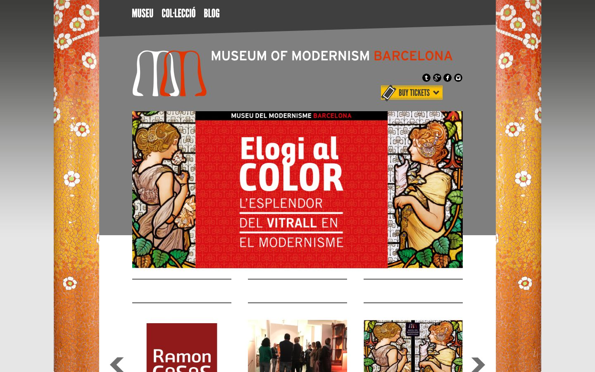

References / Website / 267
Museu del Modernisme de Barcelona website
The Barcelona Modernisme museum frames its page between two columns of trencadís mosaic and uses a looping, swelling MM monogram.
- Source
- mmbcn.cat
- Creator
- Museu del Modernisme de Barcelona
- Style
- Art Nouveau (agent-proposed, not yet reviewed by a person)
- Evidence
- Captured with
tools/capture.mjs(headless Chrome, 1440 × 900) on 28 September 2026 and inspected. Nothing covers the page. - Reviewed
- Rights
- Third-party work, stored with credit for commentary. License: unverified. Rights policy
Observed
- Two vertical columns of broken-tile mosaic in orange, red, and yellow with white flowers frame the page at left and right.
- The logo is an MM monogram of two looping, swelling strokes in white and red.
- “MUSEUM OF MODERNISM BARCELONA” is set in white and red sans-serif capitals on a gray band; the navigation uses a condensed gothic face.
- The hero banner shows two stained-glass women with flowers in the Mucha manner, around a red panel with white sans-serif type.
- Below, thin gray rules and a carousel of cards.
Why it belongs
The mosaic frame and monogram are site chrome in the style; the stained-glass images are exhibition content.
Measured: square boxes, 3 px borders on 68% of boxes, few shadows, three colour families, and accent chroma 0.63, above the fingerprint’s muted range.
Borrow
Frame a page between two narrow ornamental columns and keep the content column plain.
Draw a monogram from two looping strokes that swell and thin.
Measured
Machine-extracted by tools/extract-traits.js on . Full measurement.
- Type families
- Arial (68%), league_gothicregular (23%), Trip Sans VF (6%)
- Type scale ratio
- 1.14
- Median radius
- 0 px
- Mean chroma
- 0.02
- Palette
- #ffffff 51%
- #e3e3e1 24%
- #7f7f7f 19%
- #706d6c 2%
- #002b11 2%
- #018716 1%
- #3f3f3f 1%
- #e23401 0%

